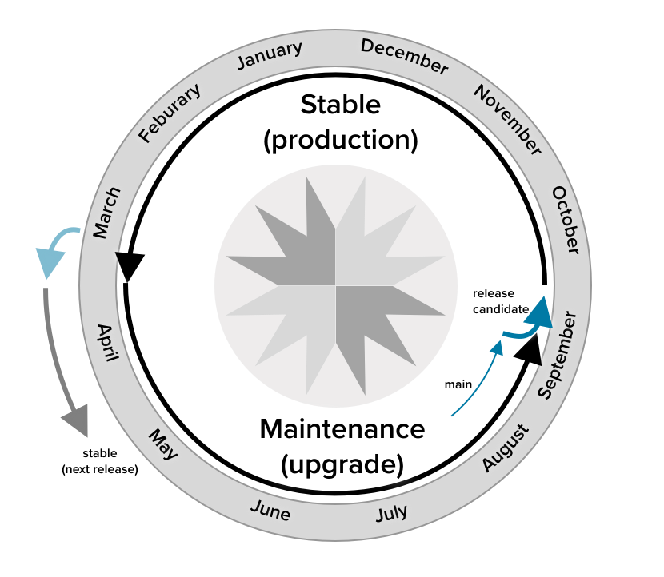

GeoServer releases on a six month cycle providing short turnaround time for new features.
Each GeoServer release is supported with bug fixes for a year, with releases made approximately every two months. This allows for an overlap between supported releases allowing organizations a chance to migrate without undue pressure.
For example, in early 2024, the current GeoServer Stable branch is 2.24.x, with 2.24.0 having been released in October 2023 and 2.24.1 in December 2023. This will continue every two months until 2.24.5 in August 2024. Meanwhile, 2.25.0 is planned for April 2024 (preceded by a release candidate 2.25-RC a month earlier in March 2024). At that time, 2.25.x will then become the Stable branch, and 2.24.3-5 will become the Maintenance branch for its last six months.
If your organization is making use of a GeoServer version that is no longer in use by the community, all is not lost. You can volunteer on the developer list to make additional releases.
Please see the wiki GeoTools and GeoServer release schedule for specific versions, or to volunteer to help make a release.
The future direction of GeoServer is primarily shaped by the constant flow of code contributions and funding directed towards the implementation of new features. In case you are wondering about a new feature or improvement we have a wiki page describing the process to discuss and implement it.
As an experiment in late 2023 the GeoServer team has shared a roadmap of goals to help coordinate fundraising and planning activities:
The GeoServer team asks for your participation and financial support to reach these goals.